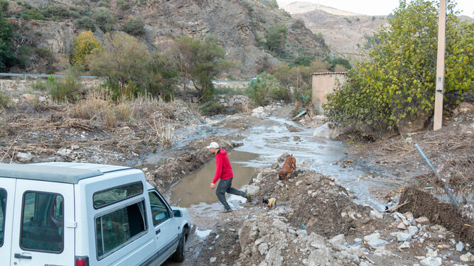
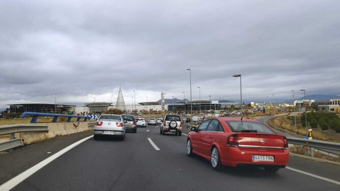

Han solicitado ayuda a las administraciones para intentar volver a la normalidad, por el momento el Ayuntamiento suministra a los vecinos afectados agua embotellada.
Nunca llueve a gusto de todos. Los vecinos de Granada miran al cielo a la espera del agua invernal para abastecer a los acuíferos y regar los campos, pero las intensas lluvias caídas en los últimos días han ocasionado importantes daños en Ízbor y Acebuches, municipios de Pinos del Valle.
La colisión de dos coches en la incorporación a la GR-30 a la altura de Maracena ha generado colas y atascos en la principal vía de circulación de la capital.
Este martes algunos conductores de Granada y el Área Metropolitana han llegado tarde a sus lugares de trabajo, colegios, institutos o citas varias. El alcance entre dos vehículos en la Autovía de Circunvalación de Granada GR-30 ha provocado el caos circulatorio esta mañana en la ciudad, causando retenciones de hasta 10 kilómetros.